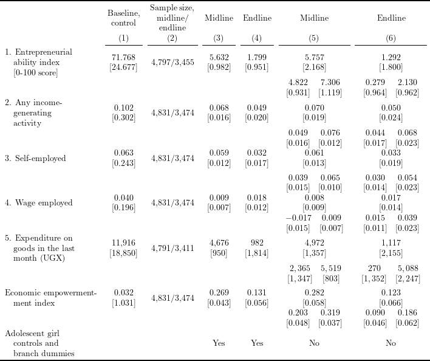

# Install and load packages ---------------
packages <- c(
"tidyverse",
"haven",
"lfe",
"stargazer",
"broom",
"kableExtra",
"magrittr",
"scales",
"RStata"
)
pacman::p_load(packages, character.only = TRUE, install = TRUE)
options("RStata.StataVersion" = 16)
options("RStata.StataPath" = "/Applications/Stata/StataSE.app/Contents/MacOS/stata-se")
# Load an example dataset ---------------
data <- read_dta("Bandiera2020_replication/ELA.dta")outcome_list <- c(
"Entrep_total", "any_iga", "selfempl",
"empl", "Expenditure_totDF", "iga"
)
outcome_label <- c(
"1. Entrepreneurial\n\\hspace{1em}ability index\n\\hspace{1em}{[0-100 score]}",
"2. Any income-\n\\hspace{1em}generating\n\\hspace{1em}activity",
"3. Self-employed",
"4. Wage employed",
"5. Expenditure on\n\\hspace{1em}goods in the last\n\\hspace{1em}month (UGX)",
"Economic empowerment-\n\\hspace{1em}ment index"
)
sum_mat <- data %>%
filter(treatment == 0, panel == 1, !is.na(age)) %>%
mutate(
across(
.cols = outcome_list,
~ ifelse(
is.na(eval(parse(text = paste0("Q", cur_column())))),
NaN, .
)
)
) %>%
summarise_at(
outcome_list,
list(mean = mean, sd = sd),
na.rm = TRUE
)
mean_mat <- sum_mat %>%
mutate(
across(
.fns = ~ ifelse(
abs(.) > 100,
formatC(., digits = 0, format = "f", big.mark = ","),
formatC(., digits = 3, format = "f", big.mark = ",")
)
)
) %>%
select(ends_with("_mean")) %>%
t()
sd_mat <- sum_mat %>%
mutate(
across(
.fns = ~ ifelse(
abs(.) > 100,
formatC(., digits = 0, format = "f", big.mark = ","),
formatC(., digits = 3, format = "f", big.mark = ",")
)
)
) %>%
select(ends_with("_sd")) %>%
t()
cont_col <- paste0(
mean_mat, "\n",
"{[", sd_mat, "]}"
)
N_ml <- map_int(
paste0("R", outcome_list),
function(x) data %>%
filter(panel == 1, !is.na(age)) %>%
.[x] %>%
drop_na() %>%
nrow()
) %>%
formatC(digits = 0, format = "f", big.mark = ",")
N_el <- map_int(
paste0("Q", outcome_list),
function(x) data %>%
filter(panel == 1, !is.na(age)) %>%
.[x] %>%
drop_na() %>%
nrow()
) %>%
formatC(digits = 0, format = "f", big.mark = ",")
N_col <- paste0(
N_ml, "/", N_el
)make_table <- function(outcome_list, type, cont) {
var_prefix <- ifelse(type == "midline", "R", "Q")
felm_func <- function(x) {
if (cont == TRUE) {
felm_formula <- as.formula(
paste0(
var_prefix, x, " ~ ", x, " + treatment + age | branch_name | 0 | villid"
)
)
} else {
felm_formula <- as.formula(
paste0(
var_prefix, x, " ~ ", " treatment | 0 | 0 | villid"
)
)
}
return(
felm(
felm_formula,
data = data %>% filter(panel == 1, !is.na(age))
)
)
}
map_df(
outcome_list,
~ felm_func(.x) %>%
summary() %>%
.$coefficients %>%
.["treatment", c("Estimate", "Cluster s.e.")]
) %>%
mutate(
Estimate = ifelse(
abs(Estimate) > 100,
formatC(Estimate, digits = 0, format = "f", big.mark = ","),
formatC(Estimate, digits = 3, format = "f", big.mark = ",")
),
se = ifelse(
abs(`Cluster s.e.`) > 100,
formatC(`Cluster s.e.`, digits = 0, format = "f", big.mark = ","),
formatC(`Cluster s.e.`, digits = 3, format = "f", big.mark = ",")
),
coef_se = paste0(
Estimate, "\n",
"{[", se, "]}"
),
coef_se = linebreak(coef_se, align = "c")
) %>%
select(coef_se) %>%
as.matrix()
}
midline_cont <- make_table(outcome_list, type = "midline", cont = TRUE)
endline_cont <- make_table(outcome_list, type = "endline", cont = TRUE)
midline_nocont <- make_table(outcome_list, type = "midline", cont = FALSE)
endline_nocont <- make_table(outcome_list, type = "endline", cont = FALSE)leebounds_stata_func <- function(outcome, type) {
if (type == "midline") {
var_prefix <- "R"
select <- "follow_up"
} else {
var_prefix <- "Q"
select <- "endline"
}
stata_cmd <- str_interp("
replace Q${outcome} =. if panel == 0
leebounds ${var_prefix}${outcome} treatment if age!=., selec(${select})
matrix coef = e(b)
matrix varcov = e(V)
matrix output = [coef\\varcov]
svmat output
keep output*
save leebounds.dta, replace
")
stata(stata_cmd, data.in = data)
leebounds <- read_dta("leebounds.dta") %>%
slice(1:3)
leebounds_bounds <- leebounds[1, ] %>%
mutate(
across(
.fns = ~ ifelse(
abs(.x) > 100,
formatC(.x, digits = 0, format = "f", big.mark = ","),
formatC(.x, digits = 3, format = "f", big.mark = ",")
)
)
) %>%
as.matrix()
leebounds_se <- leebounds[2:3,] %>%
mutate(
across(
.fns = ~ ifelse(
abs(sqrt(.x)) > 100,
formatC(sqrt(.x), digits = 0, format = "f", big.mark = ","),
formatC(sqrt(.x), digits = 3, format = "f", big.mark = ",")
)
)
) %>%
as.matrix() %>%
diag()
leebounds_output <- paste0(
"$\\begin{array}{cc} ", paste(leebounds_bounds, collapse = " & "), "\\\\",
paste("{[", leebounds_se, "]}", collapse = " & "), "\\end{array}$"
)
file.remove("leebounds.dta")
return(leebounds_output)
}
leebounds_midline <- map_chr(
outcome_list,
function(x) leebounds_stata_func(x, "midline")
)
leebounds_endline <- map_chr(
outcome_list,
function(x) leebounds_stata_func(x, "endline")
)
output_table <- c()
for (i in seq(nrow(midline_cont))) {
output_table <- rbind(
output_table,
c(
outcome_label[i],
cont_col[i], N_col[i],
midline_cont[i, ], endline_cont[i, ],
midline_nocont[i, ], endline_nocont[i, ]
),
c(
"", "", "", "", "",
leebounds_midline[i], leebounds_endline[i]
)
)
}
output_table <- rbind(
output_table,
c(
"Adolescent girl\n\\hspace{1em}controls and\n\\hspace{1em}branch dummies",
"", "", "Yes", "Yes", "No", "No"
)
)output_table %>%
as_tibble() %>%
mutate(
V1 = linebreak(V1, align = "l"),
across(
.cols = - V1,
.fns = ~ linebreak(.x, align = "c")
)
) %>%
set_colnames(NULL) %>%
kable("latex", booktabs = TRUE, escape = FALSE, align = c("l", rep("c", 6))) %>%
kable_styling(latex_options = "scale_down") %>%
add_header_above(c(" ", paste0("(", seq(6), ")"))) %>%
add_header_above(
c(
" ", "Baseline,\ncontrol", "Sample size,\nmidline/\nendline",
"Midline", "Endline", "Midline", "Endline"
),
line = FALSE
) %>%
save_kable("tex/Bandiera2020_table4_replicate.tex")